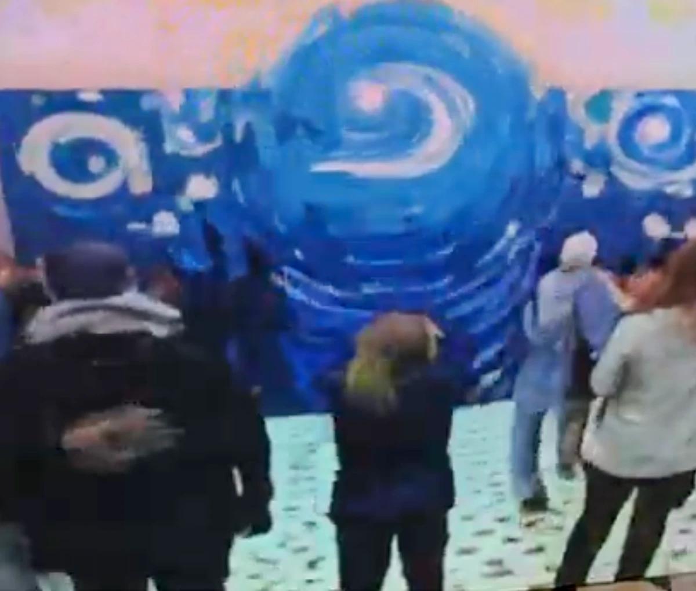
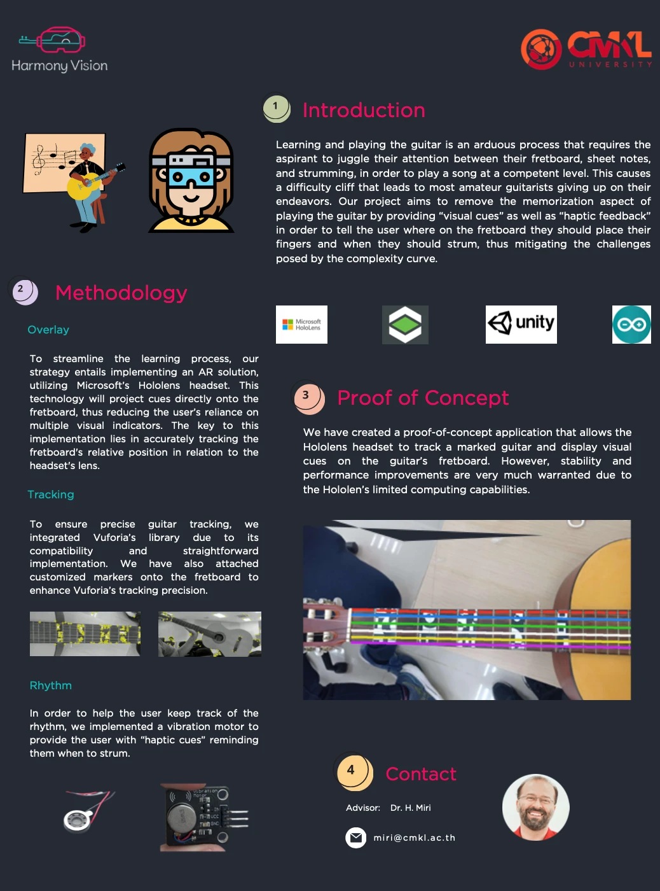

04 · Featured Projects
Selected work.

Mirror Relexion AI
A real-time interactive visual installation mirroring and transforming human movement with live computer vision and diffusion models, deployed at live events and summits.
Built: a TouchDesigner pipeline with StreamDiffusion and ControlNet, turning live camera and pose data into stylised real-time visuals.

SonarAudiobooks
An AI platform converting physical books into audiobooks for visually impaired users, the technical and commercial foundation of Sonar AI.
Built: a custom OCR pipeline, high-accuracy text-to-speech, and real-time book scanning via computer vision.
Led: go-to-market strategy across accessibility communities, libraries and educational institutions.

Harmony Vision
An AR-powered guitar training platform giving real-time visual guidance through AI gesture recognition.
Led: user research with beginner and intermediate players, exploring partnerships with music educators and AR hardware providers.
Thai Neighbourhood
A webtoon-style interactive game teaching players to recognise common scam scenarios in Thailand through branching decision trees and multiple characters.
Led: a cross-functional team of artists, engineers and AI specialists from concept through delivery, uniting narrative, art and technical execution.

AI-Levator
An AI-driven elevator optimisation system reducing wait times and energy use by predicting peak usage and dynamically adjusting dispatching.
Built: reinforcement learning and digital twin simulations for elevator scheduling, modeled as a B2B SaaS case showing 30% energy savings and 40% faster wait times.